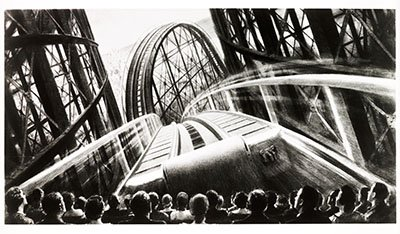
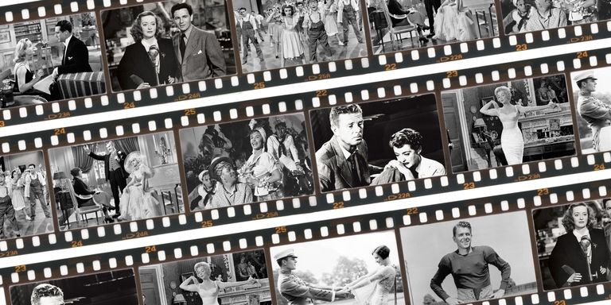

<!DOCTYPE html>
<html>
<head>
<title>HISTORY OF CINEMA</title>

<style>
body {
  background-image: url('gggg.jpg');
  background-repeat: no-repeat;
  background-attachment: fixed;
  background-size: cover;
}
</style>
<centre><h1 style="color:black;">HISTORY OF CINEMA</h1></center><h2>WHO INVENTED CINEMA?
</h2>
<h3>No one person invented cinema. However, in 1891 the Edison Company successfully demonstrated a prototype of the Kinetoscope, which enabled one person at a time to view moving pictures.

The first public Kinetoscope demonstration took place in 1893. By 1894 the Kinetoscope was a commercial success, with public parlours established around the world.

The first to present projected moving pictures to a paying audience were the Lumière brothers in December 1895 in Paris, France. They used a device of their own making, the Cinématographe, which was a camera, a projector and a film printer all in one.
</h3>

<centre><h2 style="color:black;">THE RISE OF THE FILM INDUSTRY?</h2>
<h3>By 1914, several national film industries were established. At this time, Europe, Russia and Scandinavia were the dominant industries; America was much less important. Films became longer and storytelling, or narrative, became the dominant form.

As more people paid to see movies, the industry which grew around them was prepared to invest more money in their production, distribution and exhibition, so large studios were established and dedicated cinemas built. The First World War greatly affected the film industry in Europe, and the American industry grew in relative importance.

The first 30 years of cinema were characterised by the growth and consolidation of an industrial base, the establishment of the narrativeform, and refinement of technology.</h2>
<centre><h2 style="color:black;">HOW DID CINEMA COMPETE WITH TELEVISION?</h3>

<h3>The introduction of television in America prompted a number of technical experiments designed to maintain public interest in cinema.

In 1952, the Cinerama process, using three projectors and a wide, deeply curved screen together with multi-track surround sound, was premiered. It had a very large aspect ratio of 2.59:1, giving audiences a greater sense of immersion, and proved extremely popular.

However, Cinerama was technically complex and therefore expensive to produce and show. Widescreen cinema was not widely adopted by the industry until the invention of CinemaScope in 1953 and Todd‑AO in 1955. Both processes used single projectors in their presentation.

</h3>
<centre><h2 style="color:black;">CINEMA’S GOLDEN AGE</h2>

<h3>By the early 1930s, nearly all feature-length movies were presented with synchronised sound and, by the mid-1930s, some were in full colour too. The advent of sound secured the dominant role of the American industry and gave rise to the so-called ‘Golden Age of Hollywood’.

During the 1930s and 1940s, cinema was the principal form of popular entertainment, with people often attending cinemas twice a week. Ornate ’super’ cinemas or ‘picture palaces’, offering extra facilities such as cafés and ballrooms, came to towns and cities; many of them could hold over 3,000 people in a single auditorium.

In Britain, the highest attendances occurred in 1946, with over 31 million visits to the cinema each week.

</h3>
<center><h1> "CINEMA HAS NO BOUNDARY,IT IS A RIBBON OF DREAM"</h1>


